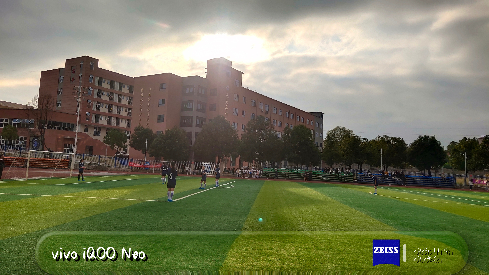
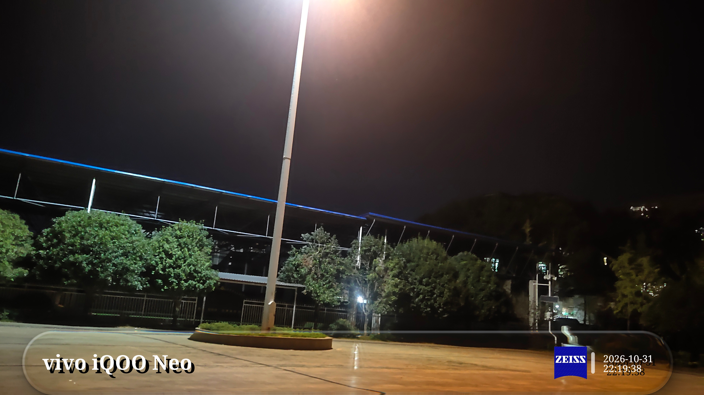
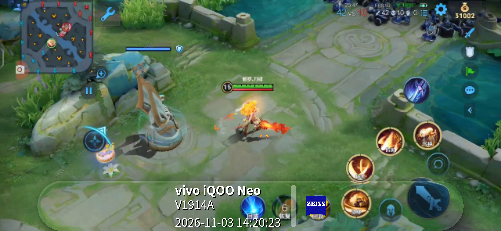
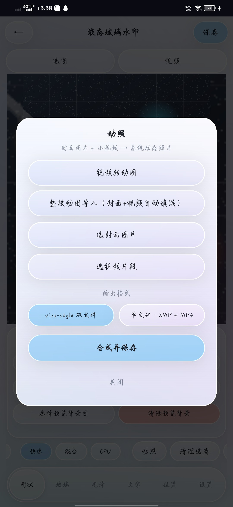
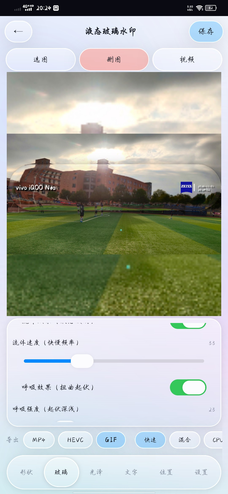
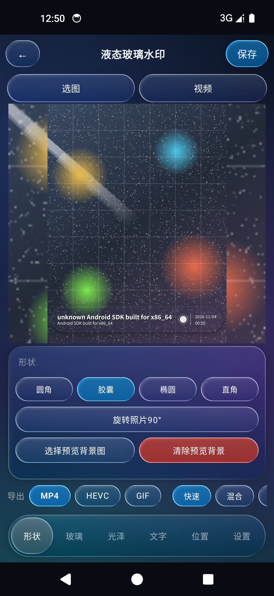

官方下载站 · Android 照片/视频水印 · 真实折射光学，不是贴纸
液态玻璃水印在照片与视频上叠加带有真实折射光学的玻璃透光层： 基于法线的 UV 折射位移、内部放大、色散、菲涅尔边缘光与高光一应俱全——背景透过玻璃真实弯折， 而不是简单的半透明叠加。所有光学参数均可调，提供 HIGH / LOW 两档画质， 支持 4 种布局、14 种品牌 Logo、自定义 Logo，以及 vivo / Google 双格式动态照片。
真实设备 / 应用内生成的效果图（点击可站内放大查看原图）。






.apk，在手机文件管理器中打开即可安装（需允许「安装未知来源应用」）。